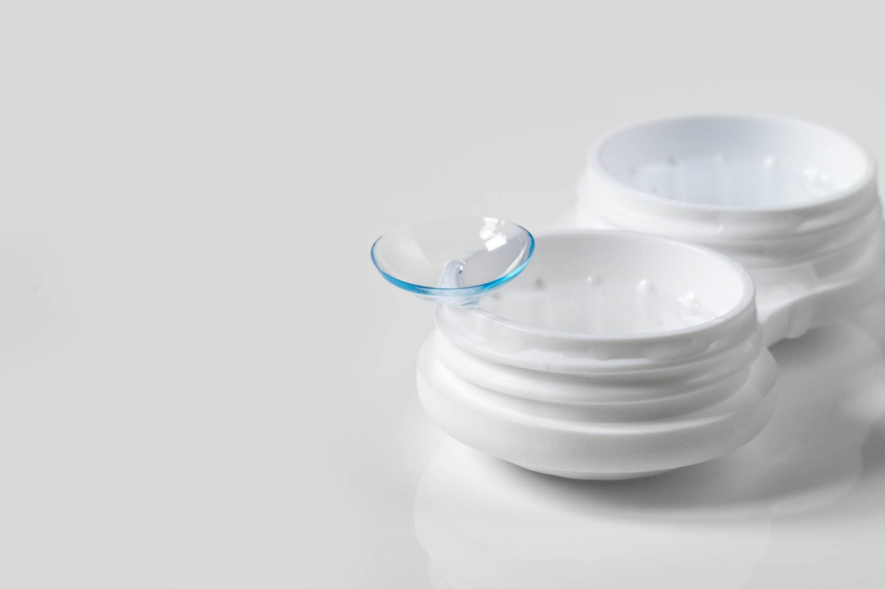

Kontaktlinser som passer øynene dine
Vi utfører kontaktlinsetilpassinger og kontroller, i tillegg til etterkontroller av refraktiv kirurgi og kataraktoperasjoner. Målet er at linsene skal kjennes som ingenting – og at øynene har det bra.

Tilpassing, ikke bare et kjøp
En linse som passer på én person passer ikke nødvendigvis på en annen. Vi måler krumning, vurderer tårefilm og ser hvordan linsen sitter før du får den med deg.
- Prøvelinse først – du bruker den hjemme før vi bestemmer type.
- Kontroll etterpå – vi ser at øynene tåler linsen over tid.
- Etterkontroll av operasjon – vi følger opp etter refraktiv kirurgi og katarakt.
Fire steg til riktig linse
Første gang tar vi oss ekstra tid. Du skal kunne sette inn og ta ut linsen selv før du går herfra.
- Samtale og måling
Vi kartlegger synet, øynene og hvor ofte du tenker å bruke linser.
- Prøvelinse
Du får en linse som passer målingene, og prøver den i noen dager.
- Opplæring
Innsetting, rengjøring og hva du gjør hvis noe føles galt.
- Kontroll
Vi ser på sitte og komfort, og justerer type eller kurve ved behov.

Linser på lager
Kom innom eller kontakt oss på 61 22 61 50 eller på post@gausdaloptikk.no for å høre om vi har din styrke og linsetype på lager.
Har vi dem ikke, bestiller vi – og du får beskjed når de er klare for henting.
Klart for en grundig synsundersøkelse?
Ring oss på 61 22 61 50, eller send en forespørsel med tidspunktet som passer deg. Vi svarer så fort vi kan.